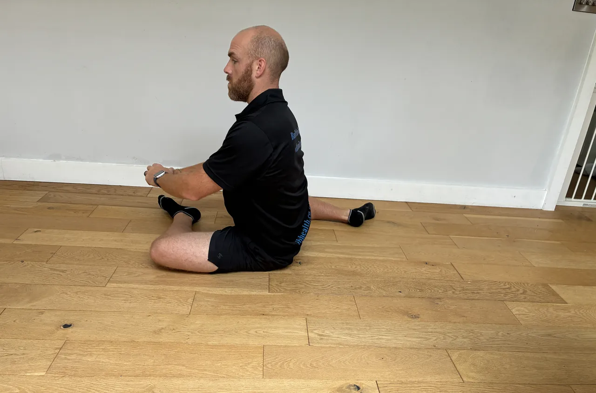
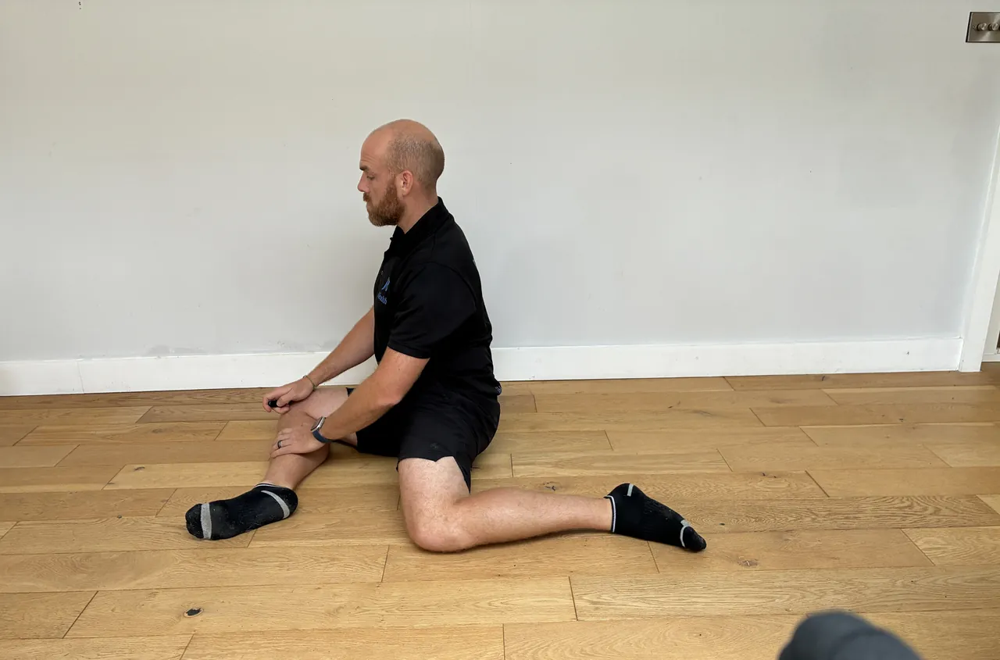

Start: Stand with feet hip-width, the bar over mid-foot. Hinge down to grip just outside your legs, shins to the bar, chest up, back flat, shoulders slightly ahead of the bar, core braced hard.
Movement: Push the floor away and stand tall, keeping the bar dragging close to your legs, hips and shoulders rising together. Finish standing tall with the glutes, then hinge the hips back and lower the bar under control down the same line.
Focus: The back stays flat from floor to lockout, never rounded. Take the load through the legs and hips and keep the bar close to the body throughout. Don't jerk the bar or lean back at the top, just stand tall.
Start: Stand in front of a box at about parallel height holding a weight at the chest, feet shoulder-width, toes slightly out.
Movement: Sit the hips back and down to lightly touch the box, then drive up through the heels to stand tall, keeping the weight at the chest.
Focus: Keep the knees tracking over the toes and the heels down. Touch the box under control rather than dropping, and keep the chest up and the weight close throughout.
Start: Hold the end of a landmine bar at one shoulder, standing tall, ribs down, core braced against the offset.
Movement: Press the bar up and slightly forward along its arc until the arm is straight, then lower to the shoulder under control.
Focus: Keep the ribs down and resist twisting towards the bar, staying square. Keep the shoulder down away from the ear, and follow the bar's arc rather than forcing it up.
Start: Hinge forward with a flat back holding a barbell at arms' length, chest up, core braced, hips back.
Movement: Pull the bar towards the hips, driving the elbows back, then lower under control while holding the hinge.
Focus: Keep the back flat and the hinge steady throughout, not rising or rounding as you row. Lead with the elbows, squeeze the shoulder blades, and keep the shoulders down.
Start: Stand tall, feet hip-width, arms ready to help drive.
Movement: Step one foot back into a reverse lunge, then drive back up and bring that knee up in front to hip height, balancing briefly, before stepping back again.
Focus: Keep the front knee over the ankle in the lunge and the hips level on the knee raise. Control the balance at the top, and drive through the standing heel rather than swinging up.
Start: Half kneel holding the end of a landmine bar in both hands at chest height, arms extended, hips tall, core braced.
Movement: Sweep the bar across in an arc from one side to the other, rotating through the trunk, then reverse.
Focus: Turn through the trunk with the hips tall and square, not twisting the lower back. Keep the ribs down, and control the arc, using the half-kneel to limit lower-body compensation.
Start: Upper back against a bench, a kettlebell resting across the front of the hips, feet flat and hip-width, chin tucked, core braced.
Movement: Drive through the heels to push the hips up to a straight line, squeeze the glutes at the top, hold briefly, then lower with control.
Focus: Finish at a straight line with the glutes, not by arching the back. Keep the ribs down and the chin tucked, and keep the bell steady across the hips.
Start: Stand a stride in front of a bench, the top of your back foot resting on it, torso tall, arms for balance.
Movement: Lower straight down by bending the front knee until the thigh is towards parallel, then drive up through the front heel to the start.
Focus: Keep the front knee tracking over the foot, not caving in, and most of the weight through the front leg. Keep the torso tall, control the descent, and go only as deep as the front knee stays comfortable.
Start: Lie on an incline bench, a dumbbell in each hand at upper-chest height, shoulder blades set back, feet planted.
Movement: Press the dumbbells up until the arms are nearly straight, then lower under control to a comfortable stretch.
Focus: Keep the shoulder blades set on the bench and the elbows at about 45 degrees, not flared wide. Keep the ribs down, and control the lower to a comfortable shoulder range.
Start: Lie chest-down on an incline bench, a dumbbell in one hand hanging down, the other steadying you, back relaxed.
Movement: Pull the dumbbell towards the hip, driving the elbow back, then lower slowly under control.
Focus: Lead with the elbow and squeeze the shoulder blade, letting the bench keep the back supported and still. Keep the shoulder down, and control the lower without swinging.
Start: Hand and knee on a bench, the other foot planted, a dumbbell in the free hand hanging down, back flat and level.
Movement: Pull the dumbbell towards the hip, driving the elbow back and up, then lower slowly under control.
Focus: Lead with the elbow and squeeze the shoulder blade, keeping the back flat and level, not twisting to lift. Keep the shoulder down, and control the lower.
Start: Stand tall with one weight racked at a shoulder and another held at the opposite side, ribs down, core braced.
Movement: Walk forward with controlled steps for the set distance, keeping the torso tall and steady.
Focus: Resist the offset pull from both weights, keeping the shoulders and hips level and the ribs down. Brace hard, take steady steps, and stay tall.
Start: Lie on your back, legs raised towards the ceiling, hands by the sides or under the hips, ribs down.
Movement: Circle the legs in a controlled corkscrew pattern, lowering and sweeping round, then reverse.
Focus: Move the legs slowly from the core and keep the lower back gently pressed down. Keep the circles small enough that the back stays flat, and control throughout.
Start: Stand tall holding a kettlebell in front of the thighs with both hands, feet hip-width, soft knees, core braced.
Movement: Push the hips back and lower the bell down the front of the legs, keeping it close, until the hamstrings stretch, then drive the hips forward to stand.
Focus: Keep the back flat and the bell close throughout. Hinge at the hips, not the waist, and only lower as far as the flat back allows.
Start: Hold a weight at the chest, elbows tucked, feet shoulder-width, toes slightly out.
Movement: Squat to a comfortable depth and pulse up and down through a small range at the bottom for the set count, then stand tall.
Focus: Keep the knees tracking over the toes and the heels down through every pulse. Keep the chest up and the weight close, and pulse only within a depth the knees tolerate.
Start: Sit tall, dumbbells held in front at shoulder height, palms facing you, elbows down, ribs down.
Movement: Press overhead while rotating the palms to face forward, straightening the arms, then reverse the rotation as you lower back down.
Focus: Keep the ribs down and the lower back neutral through the press and rotation. Keep the shoulders down, control the twist, and stay within a comfortable shoulder range.
Start: Hinge forward with a flat back holding a barbell overhand at arms' length, chest up, hips back, core braced.
Movement: Pull the bar towards the upper abdomen, driving the elbows back and out, then lower under control.
Focus: Keep the back flat and the hinge steady, not rounding or rising. Lead with the elbows, squeeze the shoulder blades, and keep the shoulders down.
Start: Stand tall holding a weight overhead in each hand, arms straight, ribs down, core braced.
Movement: Walk forward with controlled steps for the set distance, keeping the weights stable overhead.
Focus: Keep the ribs down and don't arch the lower back to hold the weights up, staying tall. Keep the shoulders stable and the arms straight, and take steady steps.


Start: Sit on the floor with one leg bent in front at 90 degrees and the other out to the side at 90 degrees, sitting tall.
Movement: Flow the knees from side to side, rotating through both hips, pausing where you feel a gentle stretch, then continuing.
Focus: Move from the hips with the torso tall, easing into each side rather than forcing. Use the hands for support, and stay within a comfortable, pain-free range.
Start: Hold a side plank, body in a straight line, shoulder over the elbow.
Movement: Lower the hips slowly towards the floor a short way, then lift back up to the straight line, controlled, for the set reps.
Focus: Control the dip and the lift with the side waist, keeping the body in line front to back. Don't let the hips sag at the bottom or the torso rotate, and keep the shoulder stacked.